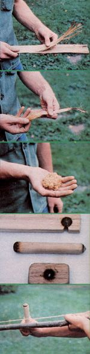

Part Iii: Fire
A Home in the Wilderness
January/February 1982
Tom Brown, Jr. was brought up in the ways of the woods by a displaced apache name Stalking Wolf. Today, he is one of our country's leading outdoor authorities, author of The Trackers and The Search, and head of the largest tracking and wilderness survival school in the U.S. (for information, write tom Brown, Jr., Dept. TMEN, Box 173, Asbury, New Jersey 08802). and that's not all! Tom has agreed to do a series of special features for MOTHER, articles that will help all of us learn how to survive-in comfort!-in the wilds. With the tracker's guidance, we can all become more...
In the first two articles in this series (see MOTHER NOS. 71 and 72), I dealt with ways to secure shelter and water . . . the two most important requirements for anyone facing a survival situation. On the other hand, one seldom needs a fire in order to stay alive. But because a good blaze can be used to cook food, sterilize water, create tools, and-of course-keep a survivalist warm and comfortable, I've placed firemaking third on my list of valuable wilderness skills.
It's important to know how to ignite a fire without the aid of a cigarette lighter-which is simply a modern form of the old flint-and-steel system-or matches. After all, you might unexpectedly find yourself thrust into a situation when you have no supply of purchased flame starters. Or if you're camping and your matches get wet or lost, you might be forced to end your trek early if you're unable to get a blaze going without artificial aids. What's more, no self-respecting outdoors purist would want to be dependent on a finite supply of matches.
In my school I teach 17 ways of building fires. In my opinion, however, the best overall flame starter-and the one I'll share in this article-is the bow drill. Learning how to work with this tool will give you a lot of satisfaction, and add to the security you'll feel when traveling through the woods.
Before I go into the details of making a fire, though, let me emphasize that whenever you practice this-or any other-outdoor skill, it's important to do the best job on the task that you can possibly do. Consistently careful craftsmanship-even in rehearsals-will not only insure good results but also improve your ability to get the job done under adverse conditions. Most native Americans aimed at this same perfection of skill on an everyday basis. They felt that anything-including, but not limited to, living plants and animals-that they took from the Earth Mother was a gift from the Great Spirit. Of course, doing a shoddy job of employing the gifts would, in effect, be showing disrespect for the Spirit's generosity, so they tried to make works of art of all things. Such actions were an integral part of these people's religious beliefs, and served the purpose of greatly increasing their survival abilities.
PREPARING THE SITE
Of course, before you can make a fire, you have to choose a spot for it. Your site should be free of any combustible brush, dried grasses, or leaves . . . away from low overhead branches . . . and not in an open, breezy area or on an exposed ridge. I also recommend (as I pointed out in my first article) setting your fire some six to ten feet-depending upon wind and weather conditions-away from your shelter entrance.
Once you've picked a site, dig out your fire pit. This dish-shaped hole should be about a foot deep and have gently sloping sides. The depression will cradle the fire, with its coals grouped toward the center, and thereby help your embers burn much longer than they would in a flat fire bed. Be sure, though, not to make the hole so deep that the pit will prevent your fire's heat from reaching you. And if you're digging in rich, loamy earth or soil that's full of root stems, line the bed with rocks to avoid the possibility of starting an underground fire. (Such blazes can actually pop up aboveground miles away, and months later!) Furthermore, use only stones gathered from a high, dry area for this-or any-fireplace job, since waterlogged rocks may explode when heated.
To increase the amount of useful warmth provided by the blaze, build a simple horseshoe-shaped reflector around the side opposite your position. Rocks, damp wood, or even earth can be used to make the semicircular heat-funneling structure. An experienced survivalist always builds fires with reflectors and tries to sit with his or her back against a tree, rock, or shelter. That way, the reflector can help warm the person's front and (by bouncing heat off the rear barrier) back as well. And with such a setup a small fire-which won't use up a lot of wood-can provide sufficient comfort.
An amateur, on the other hand, will often build a roaring blaze but leave it totally unbordered, and will therefore have to spend the night spinning at various speeds to keep one side of his or her body from freezing and the other from burning! Indeed, the amount of turning around a person has to do to stay warm when sitting by a fire will tell you right away whether that individual has good woodcraft skills. (I call this "the spin indicator test".)
F INDING WOOD
Most people who attempt to start an outdoor fire are stopped in their tracks by one difficulty: locating dry wood. The cardi nal rule to remember in this situation is that any wood found on the ground will have soaked up moisture and will be quite hard to light, so never collect ground wood for fire-starting fuel. Instead, gather dead limbs from standing trees. This wood will always ignite easily. (In fact, even in the Olympic rain forest-which gets 88 inches of rain a year-it's possible to pull a dead branch off a Douglas fir, whittle away only 1/8" of its outer surface, and find dry fuel.)
Also, try to collect your standing wood from trees in open sunny areas rather than those near stream bottoms or lowland regions where fog and moist air likely collect. You can easily determine whether the wood you're gathering is dead and dry by breaking off a piece: If the stick snaps cleanly and audibly, you've got good firewood. In most weather conditions, you can also find reasonably dry wood by touch. When your hands are too cold to be sensitive, you can press the fuel against your lower lip or cheek to feel for dampness.
You'll need four types, or grades, of fuel. The first is tinder . . . the light, airy, and fast-burning material that's used to catch a spark. The dried inner bark of elm, cottonwood, willow, sage, cedar, aspen, walnut, or cherry trees makes excellent tinder. Dry vegetation such as reeds and grasses, dogbane, velvet leaf, yucca, primrose, fireweed, bulrush, milkweed, cattail, and thistle (especially, in the last three instances, the plant's down) will work well, too. In fact, with a little bit of effort, you can use just about any dried fibrous plant.
To prepare your tinder, remove all hard, crumbly bark or inner pith from the gathered fuel and rub the remaining fibers back and forth in your hands until you've created a fluffy bundle made up of filaments as small as thread. You can soften any particularly stubborn fibers by pounding them between two rocks.
The next type of fuel you'll need is kindling . . . tiny twigs or slivers that range from the thickness of a pencil lead to that of a pencil itself. You can either break kindling material off sheltered, dry branches or carve the fuel from larger pieces of wood. Always be sure to keep both this and your tinder absolutely dry.
Squaw wood, the next biggest fuel, gets its name from the fact that native American women collected this pencil- to wrist-width wood as part of their daily routine. Rather than waste time and energy cutting huge trees for firewood, Indians burned the small and easy-to-gather sticks as often as possible.
Last comes large firewood . . . too-big-to-break fuel that's added to a fire only after the blaze is going strong, when you can use damp wood. (Dry wood, of course, will burn more easily and give off less smoke and steam.) But don't waste your energy trying to cut up these sections. Instead, shove the butt end of a large log into your fire . . . and then feed the rest of the piece in as it burns down.
And remember: Don't try to take shortcuts when gathering any of the four types of fuel. Take the time to obtain the best materials, and your fire will be easy to start and to keep burning no matter what the weather conditions. In addition, be sure you gather enough firewood to last through the night. There are few worse wilderness tasks than having to leave a snug shelter and stumble around in the dark to replace your supply.
ADDITIONAL FUEL TIPS
If you want to generate a tremendous amount of heat, adequate light, and a slow-burning fire that results in fine cooking coals . . . use hardwood for your fuel. On the other hand, should you need quick heat and a lot of light, it's best to find a softer wood such as cedar, tamarack, or juniper. Wet wood, green leaves, or pine boughs can be added to a fire to make a thick plume of smoke and steam that will help searchers pinpoint your location.
Damp fuel can also be used to help you keep a bed of coals burning overnight. ( Green wood works well for this purpose, too, but don't cut living trees for fuel unless you're faced with a true survival situation.) Add a liberal supply to a strong blaze just before you go to sleep. The slow-burning wood will keep the fire going for several hours, and produce coals that'll usually last through the night.
THE TIPI FIRE
Once you've prepared your site and gathered the necessary materials, it's time to lay the fire. I strongly recommend tipi-shape stacking for this job. Since the design allows the fuel to stand high and lean toward the center of the structure-that is, where the flames naturally rise-it starts easily, burns efficiently, and throws out quantities of heat and light. Furthermore, the slanting walls and resulting high flames help the blaze hold up even in rain or snow storms.
Start with a bed of tinder and then, working from your finest-grade materials on up, build a cone-shaped structure. (You may want to lay down a tripod of firm sticks first, to give the design its form.) Also, be sure to leave an opening through which you can reach the interior of the pile to light the fire. This entrance should face the wind so that the prevailing breeze can help drive the flames up through your fuel.
I generally put about six inches of tinder and kindling in the center and add a good supply of squaw wood-working carefully from the skinniest sticks to thicker ones-until the tipi is 8" to 10" across and a foot or more in height. When it's raining, I'll lay small slabs of bark around the cone to help keep the interior dry until I'm ready to start the fire.
If you're carrying matches, you can simply thrust one into the "doorway" of the tipi and watch your blaze take off (even in wet weather). However, if you don't have matches, you'll need an effective alternate method . . . such as the bow drill.
BUILDING THE BOW DRILL
There are five parts to a bow-drill apparatus: the bow, the handhold, the fireboard, the drill, and some tinder. The bow can be made by cutting a 2-1/2to 3-foot length of 3/4" green sapling . . . preferably one with a slight bend to it. Fasten some cordage made from a shoelace, a strip cut from your belt, or a tightly braided piece of clothing to the stick's ends (1/8" nylon cord is a good choice when you're practicing, since it'll last through many trial runs).
The handhold- the object that fits in your palm and holds the drill in place-can be made from a small section of branch, a rock with a depression in it, or a piece of bone. Almost any type of wood will do, but it's best to use one that's harder than the drill and fireboard material.
The next two pieces, the fireboard and drill (or spindle), should both be contrived from the same type of wood . . . and your choice here is critical. You must select a branch of dead wood that's very dry, yet not rotted. It should also be a wood of medium hardness: You don't want to use a very hard species (like oak, hickory, and walnut) or a very soft resinous type (like pine, fir, and spruce). Cottonwood, willow, aspen, tamarack, cedar, sassafras, sycamore, and poplar are best.
After you've chosen your wood, cut off a branch for the spindle (it should be about 3/4" in diameter and 8" long). Then use a sharp rock or a knife to smooth out the drill until it is as straight and round as you can make it, and carve points on both ends of the stick.
To construct the fireboard, find a branch that's about 1" thick and 10" long, and whittle it flat on both sides. You want to end up with a board that's twice as wide as your drill and about 1/2" in thickness.
The last item needed to make fire with a bow drill is tinder, which I described earlier.
BURN AND NOTCH
With all your equipment assembled, it's time to finish preparing it by burning holes in the handhold and fireboard and then cutting a notch in the board. To mark the holes' positions, place a small nick-which will serve as a starting point-in the center of the handhold and one in the fireboard. The latter cut should be far enough in toward the middle of the board to leave room for the depression that will be burned in by the drill and for the added notch.
Now, wrap the string once around the drill to secure the stick. Adjust the tension of the cord so that you can't slide the spindle back and forth along it. Next, set up the components as shown in the accompanying photo of a bow-wielder.
Take careful note of the form used by this individual: If you duplicate it exactly, you should be able to start a fire under almost any weather conditions. The right-handed survivalist (a left-handed person would reverse these instructions) has placed his left foot across the fireboard, while he rests his right knee on the ground. His chest is set firmly on his left knee, and his left hand-braced tightly against his shin-grasps the handhold and keeps the spindle perpendicular to the fireboard. The bow is held in his right hand and moved in line with his body. From this position the firemaker can easily spin the drill and press down on it from above. In addition, his body over shadows the apparatus and thus creates a meager, but valuable, weather break.
When you've positioned yourself and your equipment properly, begin vigorously moving the bow back and forth . . . at the same time gradually increasing your downward pressure on the handhold. This action will probably feel quite awkward at first . . . but after you've gotten the hang of it, you'll soon have drill, fireboard, and handhold smoking and be able to burn good-sized depressions in both the board and the hold.
Next, it's time to add the most essential part of the entire bow-drill setup . . . the notch. This pie-shaped opening should be carved completely through the fireboard, with its point just short of center in the plank's burned-out pit. Make your notch a clean, well-manicured cut.
Finally, you should grease the top of your drill and the handhold's socket to prevent friction-caused heat from making that depression any larger, and to help the drill rotate smoothly. You can use natural body oils by simply rubbing the end of the drill stem along the sides of your nose or in your hair. Pine pitch, animal fat, and slime molds will also do . . . but don't use water, or the drill will swell and bind up. And be sure not to mix up the ends of the drill. Otherwise, you'll get grease in the fireboard, ruin the friction there, and be unable to make a coal.
MAKING YOUR FIRE
At last, you're ready to start a fire. Check to see if the ground you're working on is damp. If it's moist, use a plate of dry bark to give yourself a decent work surface. Next, lay down your tinder and position the fireboard directly over it, so that the notch opens to the exact center of the fiber bundle.
Now, set up the rest of the apparatus . . . be sure your form is good, your handhold firmly braced, and your drill straight up and down. Then move the bow back and forth quickly while slowly pushing the drill downward. Press firmly until the lower part of the spindle and the fireboard are smoking violently. But don't apply too much pressure, or the drill will slow . . . the string will start to slip . . . and the smoke will quickly diminish.
Once the board has begun to smolder, keep stroking the bow for ten more complete repetitions. Then carefully dismantle the upper apparatus without jarring the fireboard. Next, carefully slip your knife blade down through the top of the notch to dislodge the burning dust formed by the abrasive action of the drill upon the board. Remove the board, and wrap the tinder up around the glowing ember . . . taking care not to crush the coal. Gently blow the bundle into flames-turning the tinder, as necessary, to keep the ember in contact with fresh fuel-and thrust the burning mass through the doorway into the center of your firewood tipi. [EDITOR'S NOTE: Very dry tinder can flame up dramatically . . . use appropriate caution.]
PRACTICE MAKES PERFECT
All the cutting, burning, greasing, and stroking involved in using a bow drill may seem troublesome, but with practice a survivalist can proceed from start to finish-including making the entire apparatus-in just under 15 minutes. The task doesn't require a lot of strength, either . . . form and coordination are much more important. Indeed, I've often taught six-year-old children how to make fires by this method.
Learning to use a bow drill may not come easy at first, but keep at it and you'll soon master an important survival skill. Then you'll always have the security of knowing that you can make a fire, if necessary, at almost any time and in almost any place.
MORE NAIL LORE
MOTHER-reader Stan Modjesky-after reading the "Down-Home Nail Lore" published in issue 63-sent us a few additional tips on nail driving . . . a result, he boasts, of a 20-year membership in the Blue Thumb Club. Stan (who lives in Baltimore, Maryland) advises:
Rusty nails are harder to drive, so always store nails in a dry place.
Don't put so-called cement-coated nails in your mouth, as the coat ing is somewhat toxic.
The smoother the hammer face, the less chance of bending a nail, so don't use your best hammer for anything that may "ding" it.
"Smaller hammers make smaller mistakes." Use the right-sized tool for the job.
That's the gist of it, so grab a hammer, a few nails, and some boards and start swinging. Stan says before long you'll be a Blue Thumber too, and will u nderstand why the club's motto is " *@ cents %#!".
|
 To make tinder, work some light dry wood (such as this cedar bark) with your hands... until the fibers loosen (you can soften any particularly stubborn fibers by pounding them between two rocks)... and you have a light, fluffy bundle... The fireboard, drill and handhold... The bowstring is wound once around the drill... |
 Perfect fire-starting form... Blowing the tinder-wrapped coals into flame... and thrusting the lighted bundle into a prelaid fire. |
|